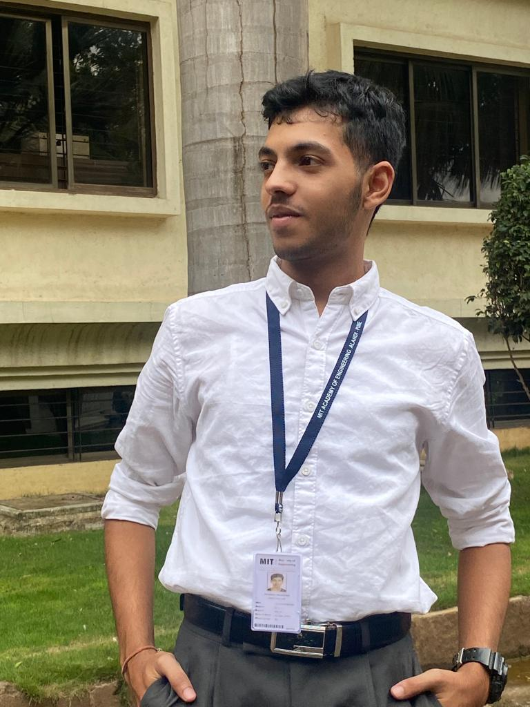

Hello there! My name is Pranav Khatavkar, and I'm a
Mechanical Engineering major at MIT Academy of Engineering. Welcome to my digital portfolio!
As a college student, I'm passionate about Airplanes, Coding, Athletics, and I've had the opportunity to explore
these interests through my coursework and extracurricular activities. My time at MIT AOE has helped me to
develop skills in Core Mechanics, Web Desiging, Aeroplane Designing, Programming, and I'm excited to showcase
some of my best work in this digital portfolio.
Throughout my college career, I've been involved in a number of extracurricular activities, which have allowed
me to gain hands-on experience in Management, [others], . [Internships].
In addition to my academic and professional pursuits, I enjoy Sports, History, Stock Market, Music and
Spiritualism which helps me to stay balanced and inspired. I'm always looking for new challenges and
opportunities to learn, and I'm excited about the possibilities that the future holds.
Thank you for taking the time to visit my digital portfolio, and I hope you enjoy browsing through my work. If
you have any questions or would like to connect, please feel free to contact me .
